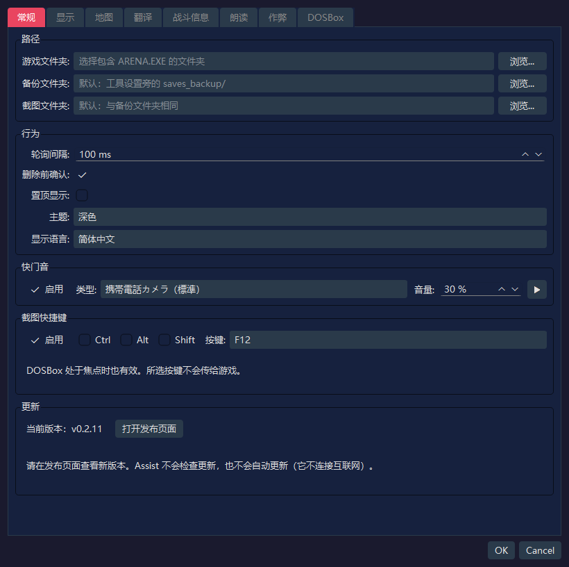
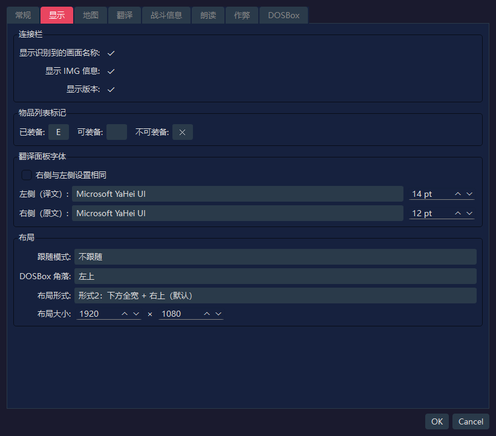
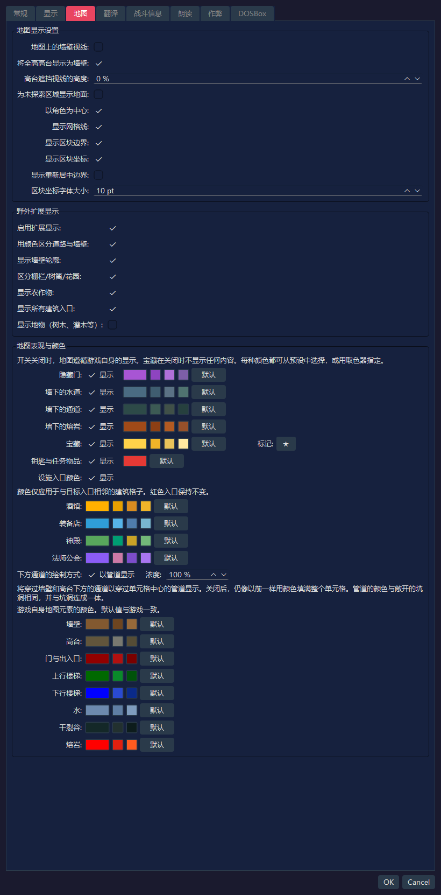
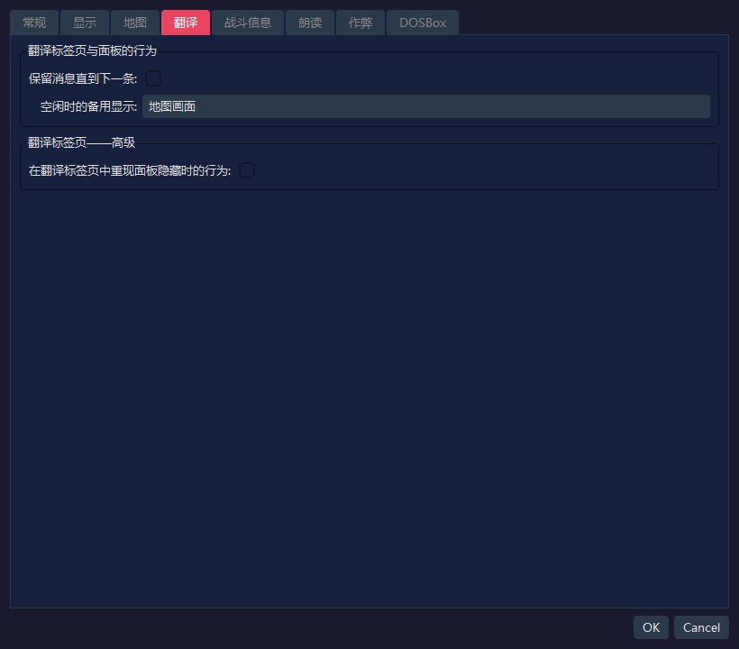
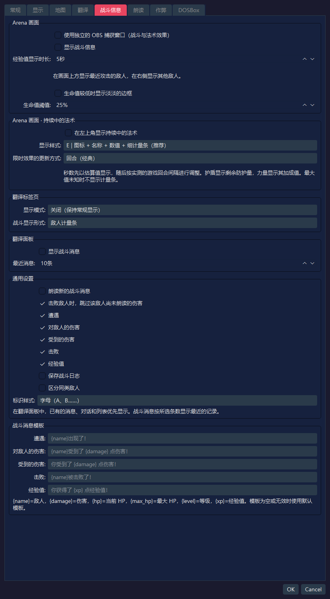
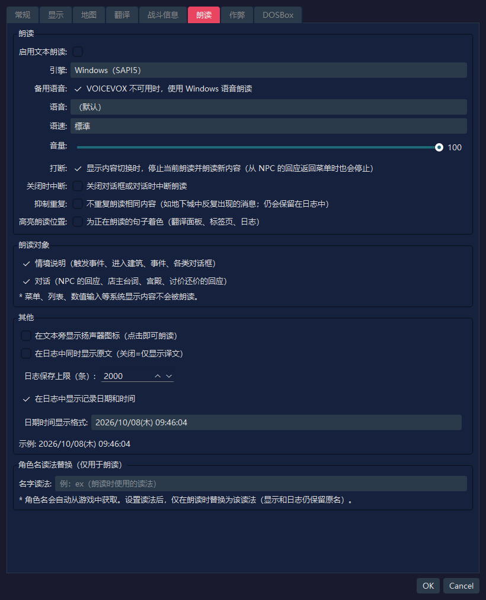
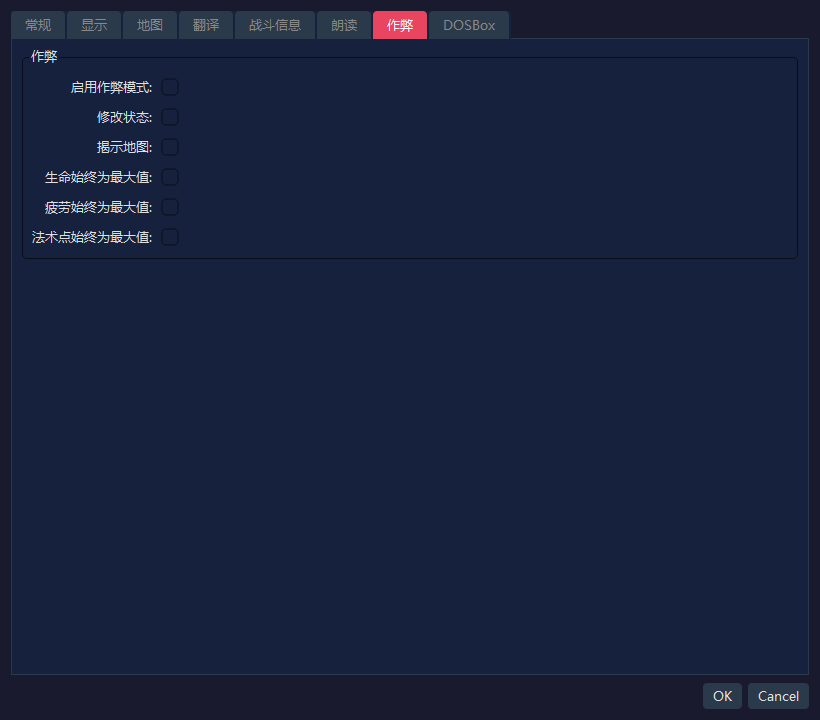
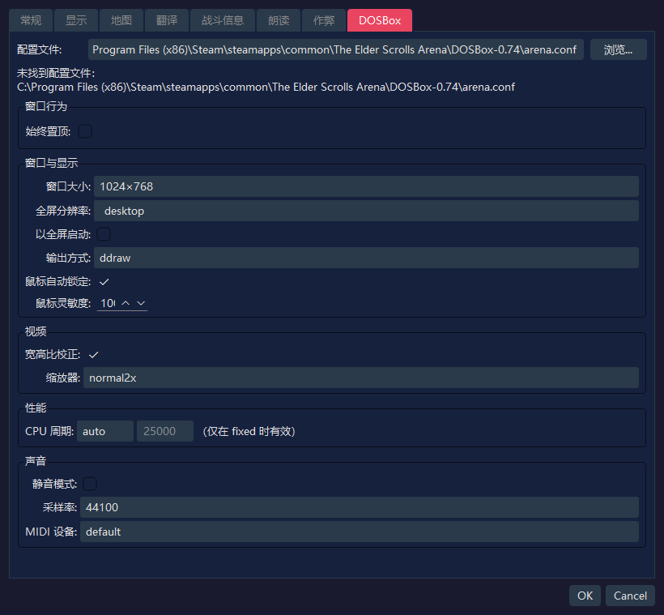

本页展示了RTESArenaAssist设置对话框各标签页的截图，并对每个界面元素加以说明。
文中的图片是在使用你的显示语言、默认设置和默认“深色”主题的设置对话框中截取的。
“DOSBox”标签页中的数值，不仅反映Assist自己的设置文件，也反映从默认路径下的 arena.conf 读取到的内容。如果你的环境中的 arena.conf 不同，显示的数值也会不同。
此标签页用于设置路径、基本行为、快门音和截图快捷键，并可查看你的版本。

| 名称 | 默认值 | 说明 |
|---|---|---|
游戏文件夹： | 空 | 包含竞技场的 ARENA.EXE 和存档文件的文件夹。未设置时，无法使用存档管理和读取游戏数据 |
备份文件夹： | 空 | 存放存档备份的位置。为空时，使用工具设置文件旁的 saves_backup/ |
截图文件夹： | 空 | 保存截图的位置。为空时，使用与备份文件夹相同的文件夹 |
浏览... | - | 选择各个文件夹 |
| 名称 | 默认值 | 说明 |
|---|---|---|
轮询间隔： | 100 ms | 检查DOSBox画面和内存状态的频率。默认值较短，以便更容易捕捉到简短的消息 |
删除前确认： | 开启 | 删除截图或备份时显示确认对话框 |
置顶显示： | 关闭 | 将Assist主窗口显示在其他窗口的前面 |
主题： | 深色 | 选择界面的配色主题 |
显示语言： | 自动（系统语言） | 界面语言。为空时，会根据系统语言自动检测，更改后在重新启动应用后生效 |
| 名称 | 默认值 | 说明 |
|---|---|---|
启用 | 开启 | 保存截图时播放音效 |
类型： | 携帯電話カメラ（標準）（手机相机，标准） | 播放的快门音。可以从标准、短版、双响、高音增强和柔和中选择 |
音量： | 30 % | 快门音的播放音量 |
▶ | - | 试听所选的快门音 |
在游戏画面（DOSBox）保持焦点的状态下，只需按一个键就能保存截图。可用它来截取几秒钟后就会消失的消息。
| 项目 | 默认值 | 说明 |
|---|---|---|
启用 | 开启 | 使用截图快捷键 |
Ctrl / Alt / Shift | 关闭 | 开启后可组合修饰键 |
按键： | F12 | 使用的按键。可以从F5到F12、PrintScreen、Pause、ScrollLock、Insert、Home、End、PageUp和PageDown中选择 |
| 名称 | 默认值 | 说明 |
|---|---|---|
当前版本： | - | 你正在使用的Assist版本 |
打开发布页面 | - | 在浏览器中打开Assist的发布页面（Releases列表）。在这里可以确认是否有更新的版本 |
Assist不会连接互联网，因此不会检查更新，也不会自动更新。
此标签页用于设置连接栏、物品列表中的装备标记、翻译面板字体和布局。

| 名称 | 默认值 | 说明 |
|---|---|---|
显示识别到的画面名称： | 开启 | 在连接栏中显示当前识别到的画面名称 |
显示 IMG 信息： | 开启 | 在连接栏中显示正在检测到的IMG信息 |
显示版本： | 开启 | 在连接栏和状态栏中显示应用版本 |
| 名称 | 默认值 | 说明 |
|---|---|---|
已装备： | E | 显示在已装备物品最左端的单字符标记 |
可装备： | 空 | 可装备物品的标记。默认为空，因此不显示任何内容 |
不可装备： | ✕ | 显示在无法装备的物品最左端的单字符标记 |
| 名称 | 默认值 | 说明 |
|---|---|---|
右侧与左侧设置相同 | 关闭 | 开启后，原文一侧的字体和大小会与译文一侧保持一致 |
左侧（译文）： | 应用默认 / 14 pt | 用于译文的字体和大小。如果没有保存过字体名称，则会选择应用在你的环境下的默认字体 |
右侧（原文）： | 应用默认 / 12 pt | 用于英文原文的字体和大小。由于“与左侧设置相同”处于关闭状态，因此可以与译文一侧分别设置 |
| 名称 | 默认值 | 说明 |
|---|---|---|
跟随模式： | 不跟随 | 选择移动DOSBox或Assist其中之一时，另一个是否随之移动 |
DOSBox 角落： | 左上 | 一键布局和布局模式下放置DOSBox的屏幕基准角落 |
布局形式： | 形式2：下方全宽 + 右上（默认） | DOSBox与Assist各面板之间的区域划分方式。形式2是使用右上区域和下方全宽区域的标准布局 |
布局大小： | 1920 x 1080 | 布局模式下整个画布的大小 |
此标签页用于设置探索地图和野外扩展显示。

| 名称 | 默认值 | 说明 |
|---|---|---|
地图上的墙壁视线： | 关闭 | 关闭时，墙后未探索的区域不会记录到地图上。开启后更接近Arena原版，透过墙壁看到的区域也会被记录 |
将全高高台显示为墙壁： | 开启 | 将从地面到天花板填满的高台以墙壁颜色显示。只改变显示时的分类，不影响视线的遮挡方式。未达全高的高台仍显示为高台 |
高台遮挡视线的高度： | 0 % | 以天花板高度为100%，顶端达到或超过此高度的高台会在地图上遮挡视线。为0% 时，所有高台都会遮挡视线 |
为未探索区域显示地面： | 关闭 | 关闭时，只有已探索的单元格显示地面颜色，从而隐藏未探索区域的形状。开启时，整张地图都以羊皮纸色显示 |
以角色为中心： | 开启 | 角色移动时，地图会自动跟随角色。角色停止时，你可以手动平移 |
显示网格线： | 开启 | 在单元格边界显示网格线 |
显示区块边界： | 开启 | 在野外地图上突出显示区块边界（以64格为单位） |
显示区块坐标： | 开启 | 在野外地图上显示每个区块的坐标，帮助你掌握所在位置 |
显示重新居中边界： | 关闭 | 以虚线显示野外地图的重新居中边界。这是用于调查或确认位置的辅助显示 |
区块坐标字体大小： | 10 pt | 区块坐标标签的文字大小 |
| 名称 | 默认值 | 说明 |
|---|---|---|
启用扩展显示： | 开启 | 野外地图扩展显示的总开关。关闭时，显示接近游戏内的自动地图 |
用颜色区分道路与墙壁： | 开启 | 用不同颜色绘制可以行走的道路和建筑、墙壁等无法通行的部分 |
显示墙壁轮廓： | 开启 | 显示墙壁和边缘地形的轮廓 |
区分栅栏/树篱/花园： | 开启 | 用连线区分栅栏、树篱、花园等边缘地形 |
显示农作物： | 开启 | 用专用的颜色或标记显示玉米和农田等农作物 |
显示所有建筑入口： | 开启 | 同时用红色显示住宅、酒馆、神殿、城门等的入口。地穴、塔和地下城的入口无论此设置如何都以红色显示 |
显示地物（树木、灌木等）： | 关闭 | 叠加显示树木、灌木、岩石、坟墓、废墟等的简易标记。它们数量众多，会让地图难以阅读，所以默认关闭 |
游戏自身的地图会把墙下的通道等内容不加区分地绘制。在这里你可以设置是否区分绘制，以及各元素的颜色。如果在某一行关闭“显示”，该元素就会恢复为与游戏地图相同的显示（关闭“宝藏”则什么都不显示）。
| 名称 | 默认值 | 说明 |
|---|---|---|
隐藏门： | 开启 | 用专用颜色显示已发现的隐藏门。在发现之前仍然是墙壁 |
墙下的水道： | 开启 | 用专用颜色显示穿过墙下的水道。在你实际从那里经过并将其揭示之前不会显示 |
墙下的通道： | 开启 | 显示穿过墙下的通道。在你实际从那里经过并将其揭示之前不会显示 |
墙下的熔岩： | 开启 | 用专用颜色显示穿过墙下的熔岩。在你实际从那里经过并将其揭示之前不会显示 |
宝藏： | 开启 | 在你获得宝藏的位置叠加显示标记。标记的字符可以在右侧的输入框中更改。当作弊标签页中的“揭示地图”开启时，无论你是否获得过，所有有宝藏的地方都会显示 |
钥匙与任务物品： | 开启 | 在宝藏中，用不同颜色显示钥匙和任务物品的标记。关闭时，它们与宝藏使用相同的颜色。“宝藏”关闭时不会显示 |
设施入口颜色： | 开启 | 在城市地图上，把与酒馆、装备店、神殿或法师公会入口相邻的、带有建筑颜色的单元格，替换为各设施专用的颜色。红色入口的颜色不变。各设施的颜色可以在下方的输入项中更改 |
下方通道的绘制方式： | 以管道显示 / 浓度 100 % | 将穿过墙壁和高台下方的通道，以穿过单元格中心的管道显示。关闭时，仍像以前一样用颜色填满整个单元格。管道的颜色与坑洞相同，并与坑洞连成一体。调低浓度可以让管道更不显眼 |
点击各项右侧的色块，可以选择任意颜色。旁边的小按钮是便于选择的推荐颜色，默认按钮则用于恢复为原来的颜色。游戏自身元素的颜色也可以用同样的方式更改：墙壁、高台、门与出入口、楼梯（上行和下行）、水、干裂谷和熔岩（默认值与游戏中的颜色相同）。
此标签页用于设置翻译面板和翻译标签页的辅助显示。

| 名称 | 默认值 | 说明 |
|---|---|---|
保留消息直到下一条： | 关闭 | 指定触发事件和物体交互的消息是否一直保留在翻译面板中，直到下一条消息到来 |
空闲时的备用显示： | 地图画面 | 选择在探索中没有译文时，翻译标签页整体显示什么。默认优先显示地图画面 |
| 名称 | 默认值 | 说明 |
|---|---|---|
在翻译标签页中重现面板隐藏时的行为： | 关闭 | 开启后，翻译结果和对话消息会显示在翻译标签页中，与翻译面板隐藏时相同。这是用于验证的高级设置 |
可以把内置译文的一部分替换成你自己的译文，也可以新增语言。
导出模板 中选择语言（要创建新语言时，选择 （新语言的空白模板）），按 导出... 保存 JSON 文件。开启 附上英文原文 后会附上英文原文（游戏正文的原文，只在已设置游戏文件夹并已建立词典的环境中附上）。请保存在翻译文件夹（见下）之外。text。text 为空的条目沿用内置译文（新语言则沿用 meta.fallback 指定语言的译文）。请不要改动键，以及 %xx、{name} 这样的替换项（含有基准译文没有的替换项，或含有 <、> 的条目不会被载入）。source（英文原文）和 ref（供参考的译文）在载入时不会被使用。lang（语言代码，例如 tr）和 meta.display_name（显示在语言列表中的名称）。meta.fallback 是未翻译条目所用的内置语言（默认为 en）；把 meta.direction 设为 rtl 即从右向左显示。导入翻译文件 中按 导入...，选择编辑好的文件。通过检查后即导入。新语言会出现在“全般”标签的显示语言中。重新启动应用程序后生效。内置语言的模板中，每个条目都带有当前译文。不修改的条目请整条删除，或让 text 留空。保留下来的条目会固定为你的译文，应用更新后内置译文的改进不会反映到这些条目。
示例 1：只修改内置德语译文中的一个条目（只有你写出的条目会被替换）。
{
"schema": "rtesaa.user_translation",
"schema_version": 1,
"lang": "de",
"texts": {
"ui_app": {
"settings.title": "Meine Einstellungen"
}
}
} |
示例 2：新语言（土耳其语）。ref 仅供参考，载入时不会被使用。
{
"schema": "rtesaa.user_translation",
"schema_version": 1,
"lang": "tr",
"meta": { "display_name": "Türkçe", "fallback": "en", "direction": "ltr" },
"texts": {
"ui_app": {
"settings.title": { "ref": "Settings", "text": "Ayarlar" }
}
}
} |
导入的文件会出现在 已导入 列表中。选中后按 删除 即可恢复为内置译文（新语言会被移除）。打开文件夹 会打开与设置文件同一位置的 translations 文件夹。放在这里的 JSON 会在启动时自动载入。对于新增的语言，手册等文档以英文显示。
你可以分别设置战斗和持续中的法术的显示位置。新增的显示、朗读和保存功能默认关闭。早期开发版本保存的设置值会原样沿用。显示的文字提供日语、英语、西班牙语、德语、法语、意大利语和俄语版本。

| 项目 | 默认值 | 说明 |
|---|---|---|
使用独立的 OBS 捕获窗口（战斗与法术效果） | 关闭 | 把战斗信息和持续中的法术汇集到一个窗口中，你可以用OBS的窗口捕获来选取它 |
显示战斗信息 | 关闭 | 在画面上方显示你最近交手过的、已遭遇且目前在视野内的敌人，并在右侧显示其他已遭遇的存活敌人（即使不在视野内）。你可以查看生命、疲劳、法术点、造成的伤害和击败情况。你受到的伤害显示在探索区域的下边缘 |
经验值显示时长： | 5秒 | 在获得经验值的瞬间，于右下角显示经验值，并在指定的秒数后移除每个框。连续获得更多时，较早的框会向左移动（1到60秒） |
生命值较低时显示淡淡的边框 | 关闭 | 当生命值降到指定的百分比或以下时，让探索画面的边缘微微闪烁。即使你不使用战斗信息的敌人显示，也可以启用 |
生命值阈值： | 25% | 开始显示低生命值边框的百分比（最大生命值的1到99%） |
受到伤害的显示会在发生后约5秒自动消失。任何地点的敌人视野都采用相同的规则。当地图或坐标无法确定时，不会凭猜测显示敌人。
若要用OBS录制，请开启此设置，然后在“窗口捕获”中选择 RTESArenaAssist オーバーレイ（窗口标题在所有语言中都以日语显示），允许透明，并叠加在游戏视频之上。战斗信息和持续中的法术会出现在同一个来源中。
| 项目 | 默认值 | 说明 |
|---|---|---|
在左上角显示持续中的法术 | 关闭 | 显示光亮、护盾、强化力量、火焰抗性和漂浮的状态 |
显示样式： | E | 图标 + 名称 + 数值 + 细计量条（推荐） | 可从A“名称 + 剩余数值”、B“名称 + 横向计量条”、C“图标 + 横向计量条”、D“图标 + 顺时针遮罩”、E“图标 + 名称 + 数值 + 细计量条”和F“紧凑标签”中选择 |
限时效果的更新方式： | 回合（经典） | 选择光亮、火焰抗性和漂浮以回合更新，还是以估算的秒数每秒更新一次。秒数会根据游戏内的进度间隔进行修正，因此当进度速度改变时（例如使用DETAIL），并不一定是固定的倍数 |
护盾显示剩余的防护量，强化力量显示增加的数值。当无法确认最大值时（例如中途连接），可能不显示计量条。秒数显示是估算值，效果何时结束以游戏中的状态为准。
| 项目 | 默认值 | 说明 |
|---|---|---|
显示模式： | 关闭（保持常规显示） | 可选择保持常规显示、将常规显示与战斗信息一起使用，或全屏显示战斗信息 |
战斗显示形式： | 敌人计量条 | 显示战斗信息时，选择文本或敌人计量条显示 |
| 项目 | 默认值 | 说明 |
|---|---|---|
显示战斗消息 | 关闭 | 在翻译面板中显示战斗文本。当出现已有的消息、对话或列表时，以它们优先 |
最近消息： | 10条 | 显示最近的1到50行战斗内容。超过数量时，会删除最旧的行并添加新的行 |
| 项目 | 默认值 | 说明 |
|---|---|---|
朗读新的战斗消息 | 关闭 | 在整体启用朗读时，按发生顺序朗读新的战斗内容。不会排除最近出现过的相同内容，下一次伤害也不会打断上一条朗读 |
击败敌人时，跳过该敌人尚未朗读的伤害 | 开启 | 击败敌人时，中断正在播放的、对该敌人造成和受到的伤害以及尚未朗读的部分。其他敌人的朗读会继续 |
保存战斗日志 | 关闭 | 将战斗历史与常规日志分开保存。只有在有记录时，记录标签页中才会显示切换项 |
区分同类敌人 | 关闭 | 仅当有多个同名敌人时，在名称后添加用于区分的符号 |
标识样式： | 字母（A、B……） | 可选择A、B…… 或1、2…… |
战斗消息模板 | 各语言的默认文本 | 编辑遭遇、对敌人的伤害、受到的伤害、击败和经验值的文本。空白项以及无法使用的占位符会恢复为默认文本 |
此标签页用于设置译文的朗读、朗读对象、日志显示和角色名的读法。

| 名称 | 默认值 | 说明 |
|---|---|---|
启用文本朗读： | 关闭 | 启用朗读译文的整体功能 |
引擎： | Windows（SAPI5） | 选择朗读引擎。当本地的VOICEVOX引擎正在运行时，可以选择VOICEVOX |
备用语音： | 开启 | 选择了VOICEVOX但无法使用时，用Windows语音朗读未能朗读的句子。关闭时，这些句子不会被朗读 |
语音： | （默认） | 引擎为Windows（SAPI5）时显示。要使用的SAPI语音。选择“（默认）”时，使用系统的默认语音 |
角色： | 风格ID 0的角色 | 引擎为VOICEVOX时显示。用于朗读的VOICEVOX角色 |
风格： | 风格ID 0 | 引擎为VOICEVOX时显示。所选角色的语音风格 |
🔊 试听 | - | 引擎为VOICEVOX时显示。用所选的角色和风格试读一句短句 |
语速： | 標準（标准） | 朗读速度 |
音量： | 100 | 朗读音量。请在0到100的范围内设置 |
打断： | 开启 | 显示内容切换时，停止之前的朗读并朗读新内容。从NPC的回应返回菜单时也会停止 |
关闭时中断： | 关闭 | 关闭对话框或对话时，停止正在进行的朗读 |
抑制重复： | 关闭 | 不重复朗读相同的内容（例如反复出现的地下城消息）。这些内容仍会保留在日志中 |
高亮朗读位置： | 关闭 | 为正在朗读的句子着色（翻译面板、翻译标签页、记录） |
找不到VOICEVOX时，会显示“启动 VOICEVOX 后即可选择（127.0.0.1:50021）。”。启动VOICEVOX并重新打开设置对话框后，你就可以选择角色和风格。
| 名称 | 默认值 | 说明 |
|---|---|---|
情境说明（触发事件、进入建筑、事件、各类对话框） | 开启 | 将触发事件、进入建筑、事件和各类对话框等说明情境的文本作为朗读对象 |
对话（NPC 的回应、店主台词、宫殿、讨价还价的回应） | 开启 | 将NPC的回应、店主台词、宫殿和讨价还价的回应等对话文本作为朗读对象 |
菜单、列表和数值输入等系统显示内容不会被朗读。
| 名称 | 默认值 | 说明 |
|---|---|---|
在文本旁显示扬声器图标（点击即可朗读） | 关闭 | 在显示的文本旁显示扬声器图标，点击即可朗读 |
在日志中同时显示原文（关闭=仅显示译文） | 关闭 | 在翻译记录中，把英文原文与译文并排显示。关闭时只显示译文 |
日志保存上限（条）： | 2000 | 保存的日志条数上限。超出的较旧日志会被自动删除 |
在日志中显示记录日期和时间 | 开启 | 在日志条目上显示记录的日期和时间 |
日期时间显示格式： | yyyy/MM/dd(aaa) HH:mm:ss | 日志日期和时间的显示格式。你可以选择预设或自定义格式 |
| 名称 | 默认值 | 说明 |
|---|---|---|
名字读法： | 空 | 仅在朗读时，把从游戏中自动获取的角色名替换为你指定的读法。显示和日志中仍保留原名 |
此标签页用于设置改写游戏内数值、始终保持最大值等辅助功能。

| 名称 | 默认值 | 说明 |
|---|---|---|
启用作弊模式： | 关闭 | 整个作弊功能的总开关。即使只开启它，如果不开启子设置，也不会有任何变化 |
修改状态： | 关闭 | 允许编辑属性等状态修改 |
揭示地图： | 关闭 | 作弊启用期间，显示整张地图 |
生命始终为最大值： | 关闭 | 作弊启用期间，如果当前生命值低于最大值，就将其恢复为最大值 |
疲劳始终为最大值： | 关闭 | 作弊启用期间，将当前疲劳恢复为最大值 |
法术点始终为最大值： | 关闭 | 作弊启用期间，将当前法术点恢复为最大值 |
此标签页读取DOSBox的 arena.conf，并设置窗口显示、视频、性能和声音。

| 名称 | 默认值 | 说明 |
|---|---|---|
配置文件 | 默认路径下的 arena.conf | DOSBox的配置文件。当Assist自己的设置为空时，会把竞技场Steam版的标准位置作为默认路径来读取 |
浏览... | - | 选择任意的 arena.conf |
始终置顶： | 关闭 | 将DOSBox窗口显示在其他窗口的前面 |
| 名称 | 默认值 | 说明 |
|---|---|---|
窗口大小： | 1024×768 | windowresolution。从预设中选择；选择自定义时，编辑宽/高数值输入框 |
全屏分辨率： | desktop | fullresolution。指定全屏时使用的分辨率 |
以全屏启动： | 关闭 | fullscreen。指定DOSBox是否以全屏启动 |
输出方式： | ddraw | output。DOSBox的渲染输出方式 |
鼠标自动锁定： | 开启 | autolock。自动把鼠标锁定在DOSBox画面内 |
鼠标灵敏度： | 100 | sensitivity。DOSBox内的鼠标灵敏度 |
| 名称 | 默认值 | 说明 |
|---|---|---|
宽高比校正： | 开启 | aspect。校正视频的宽高比 |
缩放器： | normal2x | scaler。DOSBox的画面放大滤镜 |
| 名称 | 默认值 | 说明 |
|---|---|---|
CPU 周期： | fixed 25000 | cycles。指定CPU模拟速度。选择 fixed 时，右侧的数值输入框会变为可用 |
| 名称 | 默认值 | 说明 |
|---|---|---|
静音模式： | 关闭 | nosound。禁用DOSBox的声音 |
采样率： | 44100 | rate。混音器的采样率 |
MIDI 设备： | default | mididevice。用于MIDI播放的设备 |